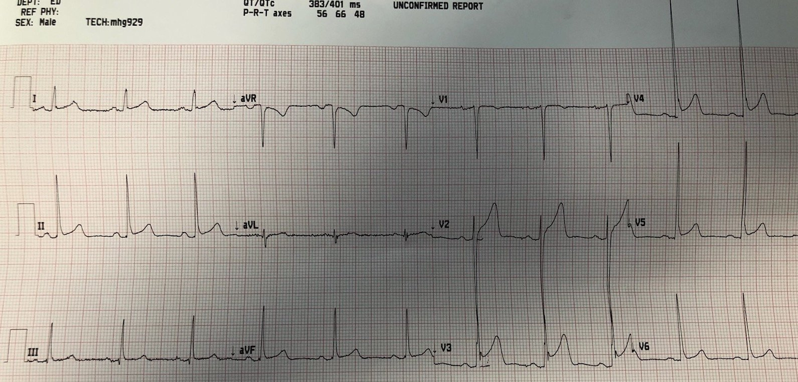
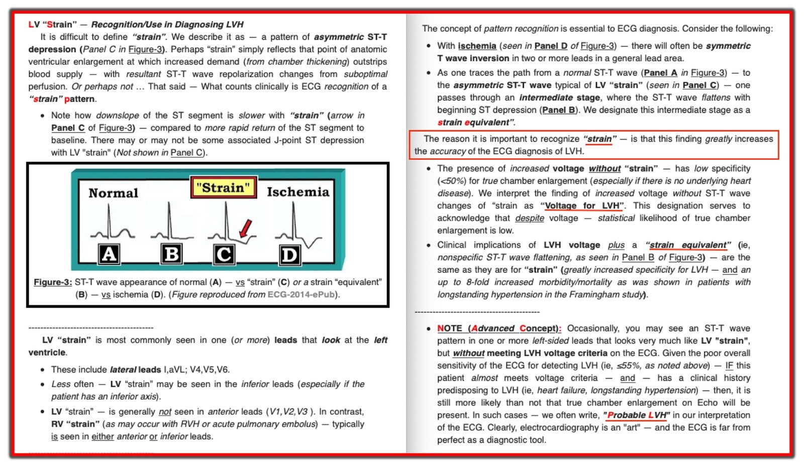
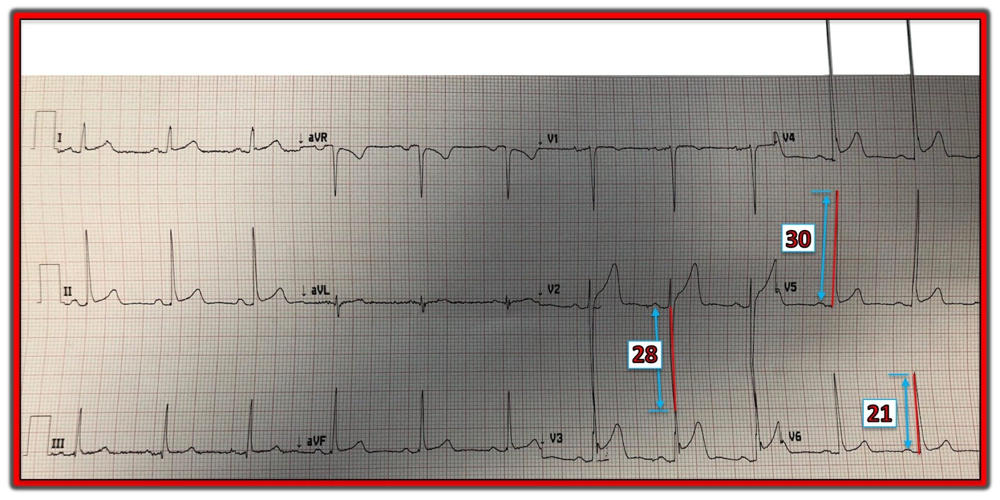

27/04/2019 — Đây có phải là biến dạng phần cuối QRS không? Có LVH không?
Bản dịch tiếng Việt của bài "Is this terminal QRS distortion? Is there LVH?" – Dr. Smith’s ECG Blog. Giữ nguyên toàn bộ 5 hình ảnh của bản gốc.
Điện tâm đồ này của một bệnh nhân được gửi cho tôi kèm câu hỏi: “Chỉ là LVH thôi, phải không?”


Trước hết, có biến dạng phần cuối QRS (terminal QRS distortion) không? Chúng tôi định nghĩa biến dạng phần cuối QRS là KHÔNG có CẢ sóng J LẪN sóng S ở MỘT TRONG HAI chuyển đạo V2 hoặc V3, và nhận thấy không có bệnh nhân nào trong số 171 bệnh nhân có ST chênh lên biến thể bình thường ở V2-V4 có dấu hiệu này. Nói cách khác, dấu hiệu này rất đặc hiệu cho tắc LAD (so với tái cực sớm), dù không nhạy. Chúng tôi thấy có sóng S ở V2 trong 100% trường hợp, và có sóng S ở V3 trong 90%. Trong 10% không có sóng S ở V3, tất cả đều có sóng J cao ít nhất 0.5 mm.
Điện tâm đồ này không có sóng S ở V3, nhưng có sóng J rõ ràng. Vì vậy đây KHÔNG phải là TQRSD.
Trích dẫn: Lee DH. Walsh B. Smith SW. Terminal QRS distortion is present in anterior myocardial infarction but absent in early repolarization. The American Journal of Emergency Medicine 34 (11): 2182–85. https://doi.org/10.1016/j.ajem.2016.08.053.
Phì đại thất trái? Chắc chắn là có điện thế cao. Có những tiêu chuẩn LVH mới, theo đó cộng biên độ sóng S sâu nhất ở bất kỳ chuyển đạo nào với biên độ sóng S ở V4. Nếu sóng S sâu nhất nằm ở V4 thì nhân đôi giá trị đó. Nếu tổng lớn hơn 28 mm ở nam hoặc 23 ở nữ thì chẩn đoán LVH. Tôi nghĩ sóng S ở V2 sâu 28 mm, nên trường hợp này sẽ đạt tiêu chuẩn mới.
Trích dẫn: Peguero, Julio G., Saberio Lo Presti, Jorge Perez, Omar Issa, Juan C. Brenes, và Alfonso Tolentino. 2017. “Electrocardiographic Criteria for the Diagnosis of Left Ventricular Hypertrophy.” Journal of the American College of Cardiology 69 (13): 1694–1703. https://doi.org/10.1016/j.jacc.2017.01.037.
Nhưng LVH đặc biệt có thể bị bắt chước ở những người trẻ, khỏe mạnh, chơi thể thao, nhất là người có thành ngực mỏng. Hơn nữa, khi điện thế cao không kèm ST chênh xuống ngược hướng và sóng T đảo ngược (những bất thường tái cực điển hình đi kèm LVH, trước đây gọi là “tăng gánh” (strain)), thì khả năng có LVH đáng kể về lâm sàng thấp hơn nhiều và tiên lượng tốt hơn nhiều, nhất là ở bệnh nhân không bị tăng huyết áp.
Đây là tin nhắn tôi trả lời:
“Thật ra, có lẽ còn không phải LVH. Có lẽ là tái cực sớm ở một người trẻ có thành ngực mỏng. Có lẽ là người Mỹ gốc Phi. Nhưng chắc chắn không phải thiếu máu cục bộ.”
Hóa ra anh ấy là một nam giới người Mỹ gốc Phi, gầy, ngoài ra khỏe mạnh. Anh ấy được loại trừ nhồi máu cơ tim.

===================================
Bình luận của KEN GRAUER, MD (27/4/2019):
===================================
Trước khi tôi bắt đầu trao đổi thư từ với Dr. Stephen Smith — khái niệm biến dạng phần cuối QRS — Terminal QRS Distortion (T-QRS–D) vẫn còn xa lạ với tôi. Đây là một khái niệm tuyệt đẹp, đôi khi có thể hỗ trợ vô giá trong việc phân biệt tái cực sớm với OMI cấp. Ca này giúp hiểu sâu thêm thế nào là TQRSD, và thế nào không phải là TQRSD.
- T-QRS–D — được định nghĩa là không có cả sóng J lẫn sóng S ở một trong hai chuyển đạo V2 hoặc chuyển đạo V3. Tuy định nghĩa đơn giản — tôi đã phải luyện tập một chút mới thấy thoải mái và tự tin khi nhận ra nó.
- Điện tâm đồ trong ca này không có T-QRS-D vì những lý do Dr. Smith đã nêu ở trên ( = thấy có một sóng J [khía] rõ nét ở chuyển đạo V3).
Ngày càng có nhiều ví dụ khác về thế nào là T-QRS-D và thế nào không phải trên Blog của Dr. Smith. Để tiện tra cứu — Hãy xem 2 link sau:
- HÃY BẮT ĐẦU VỚI BÀI NÀY = bàn luận từng bước của Brooks Walsh & Steve Smith về T-QRS-D.
- LUYỆN TẬP THÊM = 4 ví dụ (3 dương tính; 1 không phải T-QRS-D).
=================
Chủ đề còn lại được đề cập trong bài này mà tôi muốn bình luận là các tiêu chuẩn điện tâm đồ cho LVH. Về “Quan điểm của tôi” đối với một phương pháp dễ–dùng để chẩn đoán LVH bằng điện tâm đồ — BẤM VÀO ĐÂY. Những điểm MẤU CHỐT cần nhấn mạnh gồm:
- Hơn 50 tiêu chuẩn chẩn đoán LVH bằng điện tâm đồ đã được mô tả trong y văn. Việc đã có quá nhiều nỗ lực định ra tiêu chuẩn — đơn giản có nghĩa là không tiêu chuẩn nào trong số đó chính xác một cách tối ưu. Mọi tiêu chuẩn đều có độ nhạy không hoàn hảo (thường dưới 55% khá nhiều).
- Dù độ nhạy của điện tâm đồ trong chẩn đoán LVH chưa tối ưu — độ đặc hiệu có thể cao hơn nhiều (tức là >90%) — NẾU có mặt một số đặc điểm nhất định.
- Các tiêu chuẩn Peguero năm 2017 mà Dr. Smith đã trích dẫn ở trên nay cung cấp thêm một lựa chọn điện tâm đồ để đánh giá LVH — được cho là có độ nhạy tăng lên (tới 62%) so với các tiêu chuẩn dùng trước đây. Tuy nhiên, tiêu chuẩn của họ dựa trên một nhóm thuần tập hồi cứu nhỏ (<100 bệnh nhân) với sự đa dạng hạn chế trong việc chọn bệnh nhân (các bệnh nhân LVH đều bị cơn tăng huyết áp) — vì vậy theo ý kiến của tôi, có thể cân nhắc dữ liệu của họ, nhưng chưa nên vội thay thế hẳn các tiêu chuẩn khác.
- Thay vì phụ thuộc vào bất kỳ một tiêu chuẩn điện thế đơn lẻ nào — tôi nhận thấy ( = kinh nghiệm của tôi) rằng việc đánh giá khả năng có LVH tốt nhất nên dựa trên một loạt yếu tố, gồm: i) Tuổi bệnh nhân (người trẻ tuổi <35 thường có biên độ QRS tăng, không nhất thiết liên quan đến lớn buồng tim thực sự); ii) Sự hiện diện của các bệnh tim mạch khác + đặc điểm nhân khẩu học (tức là, về mặt thống kê, LVH có khả năng cao hơn nhiều ngay trước khi bạn nhìn vào điện tâm đồ nếu bệnh nhân là nam giới trưởng thành người Mỹ gốc Phi bị tăng huyết áp lâu năm); iii) Nắm được các tiêu chuẩn khác nhau có thể hỗ trợ khi có những dấu hiệu điện tâm đồ nhất định (tức là, tôi thấy tiêu chuẩn điện thế R≥12mm ở chuyển đạo aVL đặc biệt hữu ích khi có trục lệch trái — trường hợp này tiêu chuẩn điện thế ở các chuyển đạo ngực có thể không phát hiện được LVH); và, iv) Hình 1 = Sự hiện diện của “Tăng gánh” thất trái (LV strain) và/hoặc hình ảnh “Tương đương Tăng gánh” (Strain Equivalent) (nếu có một trong hai hình ảnh này kèm các đặc điểm lâm sàng phù hợp với LVH — khả năng lớn buồng tim thực sự tăng lên rất nhiều).


=================
Về việc Có LVH hay Không trong Ca này:
Để rõ ràng — tôi đã đặt lại điện tâm đồ của ca này ở Hình 2. Việc đánh giá khá khó khăn do bản ghi bị méo góc chụp, vì vậy tôi đã đo điện thế ở một số chuyển đạo then chốt.


=================
- Theo Dr. Smith — sóng S sâu 28mm ở chuyển đạo V2 thỏa mãn tiêu chuẩn Peguero [S sâu nhất ở bất kỳ chuyển đạo nào + SV4 ≥28 (nam) hoặc ≥23 (nữ)].
- Nhiều tiêu chuẩn điện thế khác cũng sẽ được thỏa mãn ở Hình 2 (BẤM VÀO ĐÂY), do sóng S rất sâu ở chuyển đạo V2 (28mm) — và các sóng R rất cao ở V5 (30mm) và V6 (21mm) — NẾU bệnh nhân này ≥35 tuổi. Ở người trẻ tuổi, biên độ QRS phải tăng nhiều hơn hẳn mới phản ánh lớn buồng tim thực sự (tức là, tôi dùng số đảo ngược của 35mm = 53mm cho tổng S sâu nhất ở V1,2 + R cao nhất ở V5,6 làm tiêu chuẩn điện thế của tôi ở người trẻ tuổi). LƯU Ý — Nghiên cứu về tiêu chuẩn Peguero đã không đánh giá biên độ QRS ở người trưởng thành <35 tuổi.
- LƯU Ý — Không thấy “tăng gánh” thất trái hay “tương đương tăng gánh” ở bất kỳ chuyển đạo bên nào trong Hình 2. NẾU bệnh nhân này lớn tuổi hơn (chẳng hạn ở độ tuổi 40 hoặc 50) — thì tiêu chuẩn điện thế cho LVH sẽ dễ dàng được thỏa mãn, nhưng không có “tăng gánh” hay “tương đương tăng gánh”. Trong tình huống này, tôi ưa dùng thuật ngữ “Điện thế đạt tiêu chuẩn LVH” (Voltage for LVH) — đây là cách dễ dàng để truyền đạt rằng dù biên độ QRS tăng — độ đặc hiệu đối với lớn buồng tim thực sự vẫn hạn chế (tức là, dưới 50%, và có thể thấp hơn nhiều tùy các yếu tố lâm sàng khác).
- Như Dr. Smith đã nêu, vì bệnh nhân trong ca này hóa ra là một nam giới người Mỹ gốc Phi trẻ, gầy và ngoài ra khỏe mạnh — khả năng lớn buồng tim thực sự là rất thấp.
- ĐIỀU CỐT LÕI: Đánh giá tuổi, các yếu tố lâm sàng + đặc điểm nhân khẩu học và sự có mặt hay vắng mặt của “tăng gánh” thất trái và/hoặc “tương đương tăng gánh” (như đã bàn trong Hình 1) — có thể hỗ trợ vô giá giúp bạn đánh giá chính xác hơn khả năng lớn buồng thất trái thực sự.